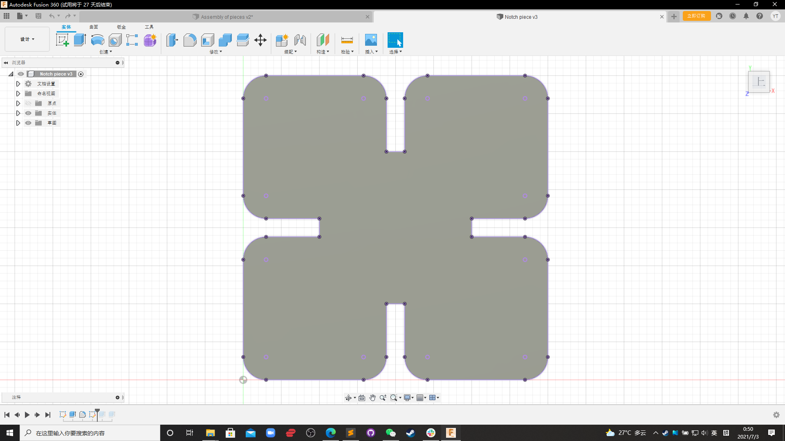
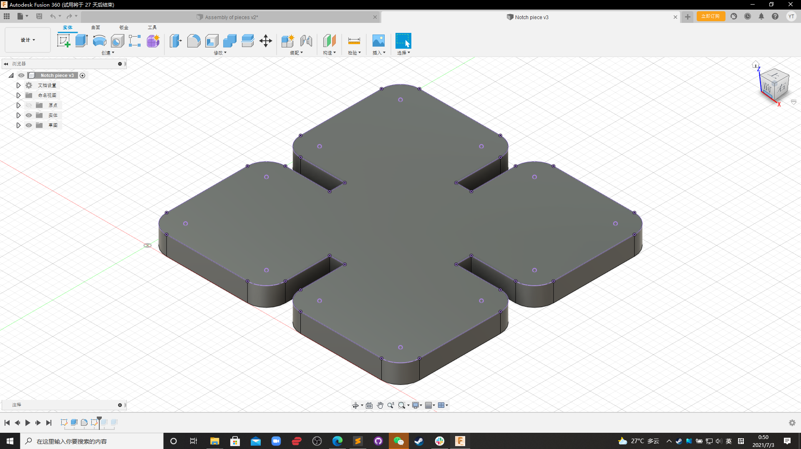
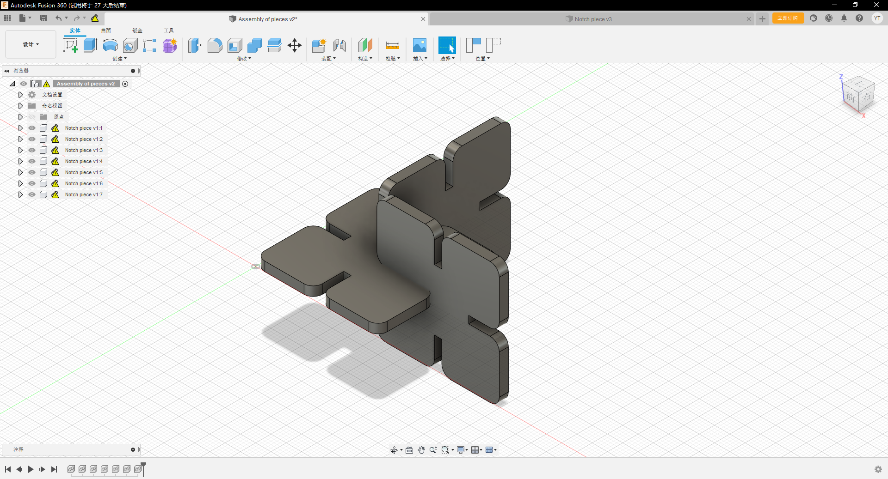
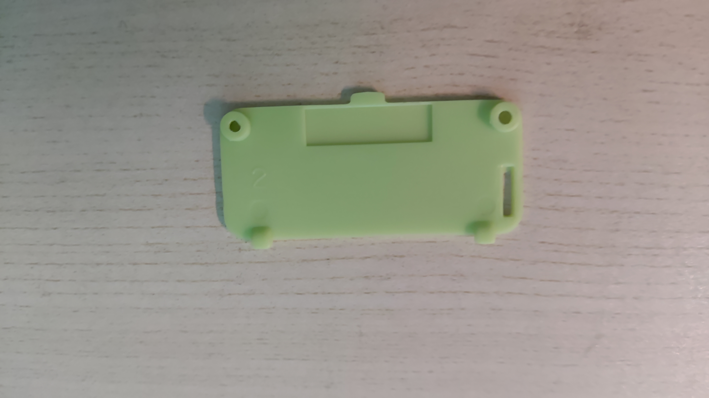
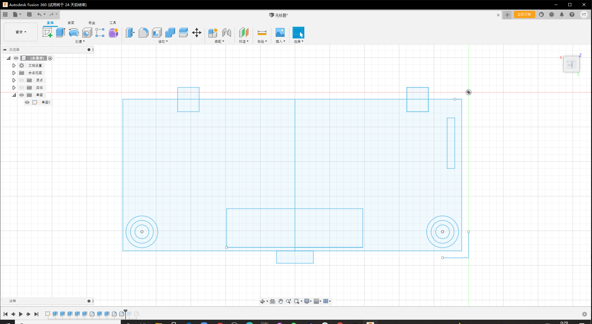
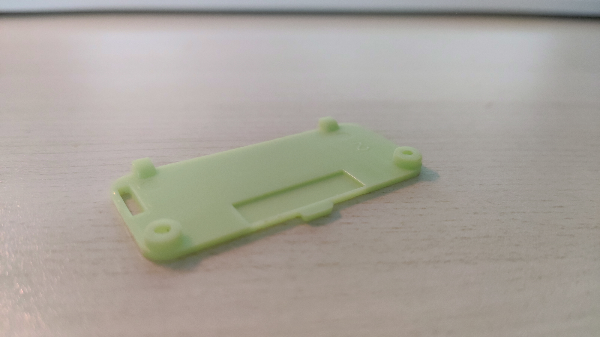
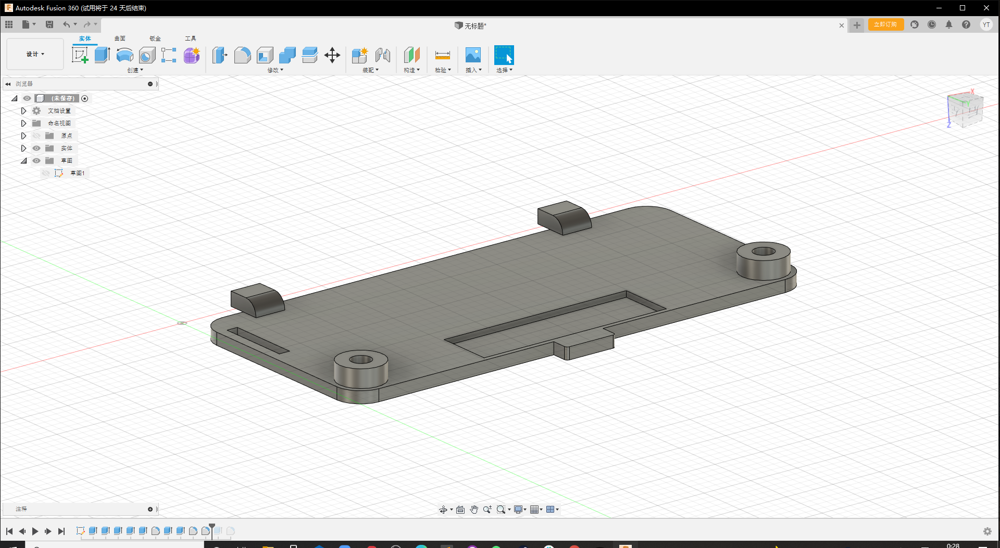
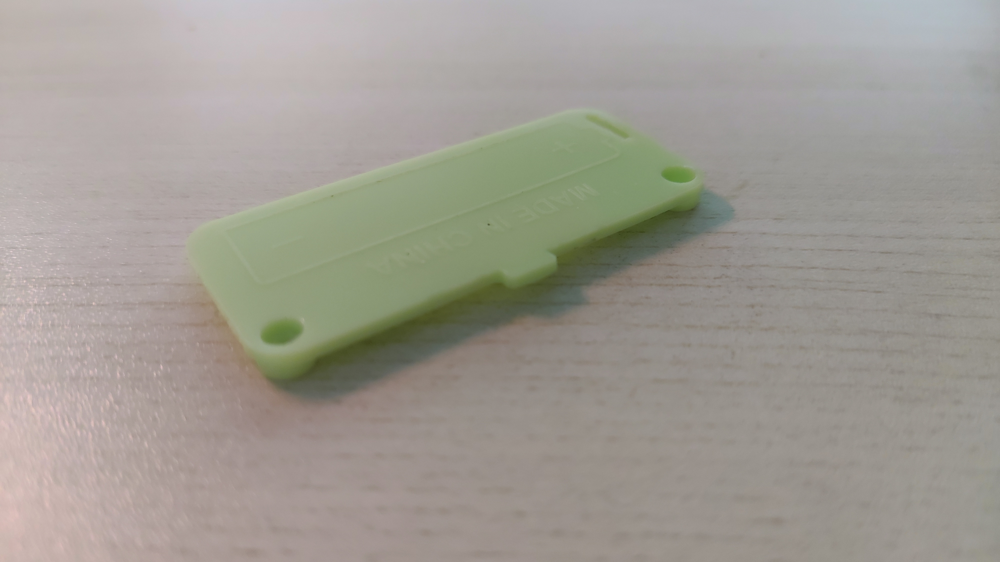
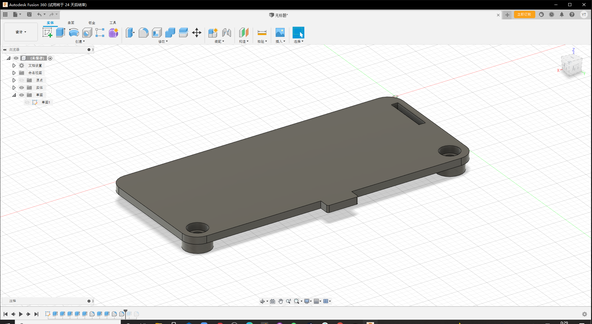

Week 2: 2D Design and Cutting
Home Page
The assignment for week 2 was get our hands on Fusion 360. Using Fusion 360 to model from scratch.
The first thing I modelled is this notch.

First, I created a sketch
And then make the sketch into 3D object 
Assemble the objects 
After making that notch, now I am able to make more complicated objects 
Again, start with the sketch, and use calipers to measure the dimensions of each part. 
Some pictures of the 3D-model and the actual object.
   